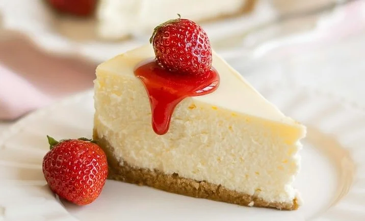
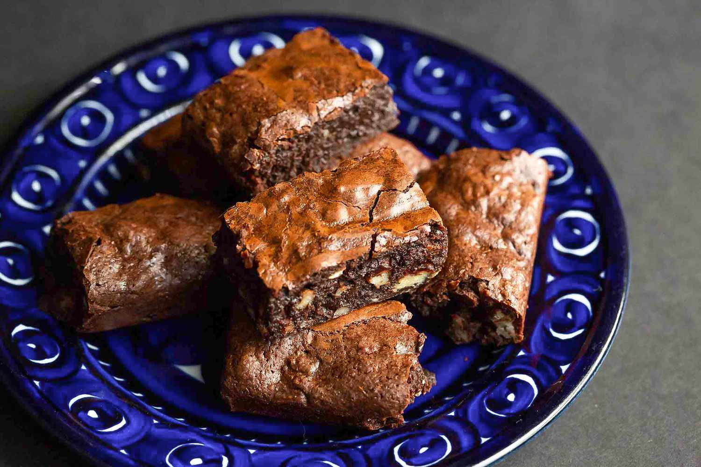

My Favorite Recipes
Cheesecake

INGREDIENTS
- 32 ounces of full-fat brick cream cheese
- 1 cup of granulated sugar
- 3 large eggs
- 1 teaspoon of vanilla extract
- 1.5 cups of graham cracker crumbs
- 4 tablespoons of melted butter
- 2 tablespoons of sugar
INSTRUCTIONS
- Set your oven to 350°F (175°C).
-
Mix the graham cracker crumbs, sugar, and melted butter until it
feels like wet sand.
-
Press the mixture firmly into the bottom and slightly up the
sides of a 9-inch springform pan.
- Bake for 10 to 15 minutes, then let it cool.
Brownies

INGREDIENTS
- 1/2 cup (113g) unsalted butter, melted
- 1 cup (200g) granulated white sugar
- 2 large eggs
- 1 teaspoon pure vanilla extract
- 1/2 cup (34g) unsweetened cocoa powder
- 3/4 cup (90g) all-purpose flour
- 1/4 to 1/2 teaspoon salt
- 1/2 cup chocolate chips or chopped chocolate (optional)
INSTRUCTIONS
-
Heat your oven to 350°F (175°C) and grease an 8x8 inch baking
pan.
-
Whisk the melted butter (or oil) and sugar together in a medium
bowl. Add the eggs and vanilla extract, then mix well.
-
Sift together the flour, cocoa powder, salt, and baking powder
in a separate small bowl.
-
Gently stir the dry mixture into the wet ingredients until just
combined. Fold in the chocolate chips.
-
Pour the batter into your prepared pan. Bake for 20 to 22
minutes.
-
Let the brownies cool completely in the pan before cutting
them into squares.
Red Velvet Cookies

INGREDIENTS
- 1 2/3 cups all-purpose flour
- 1/4 cup unsweetened cocoa powder
- 1 teaspoon of Baking Soda
- 1/4 teaspoon of Salt
- 1/2 cup unsalted butter, softened
- 3/4 cup brown sugar and 1/4 cup white sugar
- 1 large egg and 2 teaspoons vanilla extract
- 3/4 teaspoon red gel food coloring
- 1 cup white chocolate chips
INSTRUCTIONS
- Whisk flour, cocoa powder, baking soda, and salt in a bowl.
- Beat softened butter and both sugars until fluffy.
- Mix in the egg, vanilla, and red gel food coloring.
-
Slowly blend the dry mix into the wet mix just until
combined.
- Gently stir in the white chocolate chips.
- Refrigerate the dough for 30 minutes.
-
Scoop balls onto a lined sheet and bake at 350°F (175°C) for 10
to 12 minutes.